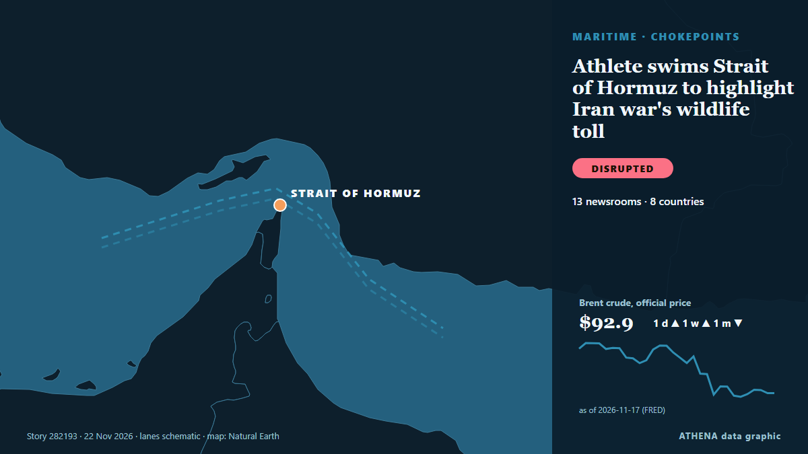

ATHENA Glaux Intelligence — Global news intelligence — every number explained
Every headline, checked across countries.
ATHENA Glaux reads 634 news outlets worldwide. A story becomes a verified event only when independent outlets report it. Each event shows who was first and a risk score with its reasons.
Earthquake or flood near you this week?
Type your town and see the earthquakes, floods, storms and official warnings near it, with a 72-hour emergency kit checklist. Free, no sign-up, and your place stays on your device.
Reports drift in from independent outlets - when two meet on the same story, it becomes a verified event.
How ATHENA checks a story
- CollectReports arrive from independent outlets in many countries.
- MatchWhen two outlets meet on the same story, it becomes a verified event.
- ExplainEach event shows who was first, how far it spread and why the risk is what it is.

Energy & EnvironmentAthlete swims Strait of Hormuz to highlight Iran war's wildlife toll
British endurance swimmer Lewis Pugh has swum the Strait of Hormuz to highlight environmental threats during ongoing conflict. from CBS News (World)
Somalia accuses UAE of ‘invasion’, expels ambassador
Somalia has ordered the United Arab Emirates (UAE) ambassador to leave the country within 72 hours and recalled its own envoy from Abu Dhabi, escalating a diplomatic dispute between the… from Barbados Today
Denmark pushes EU to tighten travel curbs on Russians after foiled plot
Denmark has urged EU members to take action against Moscow after saying it foiled an alleged Russian intelligence plan to assassinate a US-Ukrainian rapper. from The New Arab

Ships at the world's chokepoints now
Live AIS counts. Tap or hover a bar for the detail.
UN Moves to Regulate Killer Robots
Countries move towards regulating killer robots by 2028, but no binding treaty has been secured. from News of Bahrain
Trump defends Putin after trilateral with Xi
President Trump, China's Xi Jinping and Russia's Vladimir Putin appeared to make little progress in their trilateral meeting in Shenzhen, China. from CBS News (World)
Zelensky says Crimean Bridge strikes ‘fair response’ as he meets UK’s Streeting
Ukraine's president says Kyiv acted after 109 separate Russian aerial attacks on bridges in Ukraine. from BBC News
Geopolitics, Politics & Security
More ›Saudi-Led Coalition Says Downed 3 Houthi Missiles Headed For Riyadh
The coalition said that air defences intercepted and destroyed (3) ballistic missiles launched by the terrorist Houthi militia toward Riyadh. from NDTV World
- Wars & conflicts
Iraqi forces strike compromise with powerful pro-Iran militia, security officials say
- Diplomacy & summits
South Africa hit back against Ireland in thrilling Dublin test
- Diplomacy & summits
Araqchi says Iran wants diplomacy to end war; Trump says terms unacceptable
- Elections & politics
With US midterms underway, courts rebuff Trump's pressure on state election officials
Economics, Finance & Markets
More ›How ‘GTA VI’ surpassed all expectations
You can paint your bedroom walls. You can scuba dive and explore shipwrecks. from Bangkok Post
- Central banks & regulation
Ukraine receives nearly 8 bln euros from EU
- Inflation & interest rates
Malaysia set to hold rates on strong growth, signal hike in 2027
- Debt & budgets
EU leaders’ chair pushes budget cuts, suggests digital tax
- Shares & market moves
UK braced as temperatures could drop to minus 10C in coldest night of autumn
Trade, Industry & Infrastructure
More ›Rescuers say 39 missing in Indonesia factory fire
JAKARTA: Indonesian rescue workers were searching for 39 missing people on Sunday after a confectionery factory caught fire west of Jakarta, a rescue official said. from Arab News
- Aviation, rail & road
Washington governor decries ‘out-of-control’ ICE at Seattle airport
- Aviation, rail & road
First Ladies of Azerbaijan and Vietnam visited Heritage House in Hanoi
- Trade & trade deals
EU and Indonesia officially sign ‘ambitious’ trade deal
- Aviation, rail & road
Belgium faces air traffic shutdown due to national strike Monday
Energy, Resources & Environment
More ›Fossil fuel dispute threatens to scupper climate deal
The COP31 presidency held urgent talks between opposing sides to narrow differences and agree on a text more than 24 hours after the scheduled end. from Free Malaysia Today
- Extreme weather & natural disasters
Severe Storm Destroys Thousands Of Homes, Kills Three In Brazil
- Climate & climate policy
Thai youth showcase conservation efforts at COP31 climate summit
- Climate & climate policy
COP31 climate summit risks failure as talks go deep into overtime
- Climate & climate policy
COP31 climate talks close to final deal, says summit president
Technology, AI & Cybersecurity
More ›Little Mercury gets its first visitor in years as a pair of spacecraft loop into orbit
CAPE CANAVERAL, Florida: A pair of spacecraft slipped into orbit around Mercury on Saturday after an eight-year cruise through the inner solar system to unravel our littlest planet’s mountain of… from Arab News
- Chips & computing
Trump's administration is sending mixed signals on chips, China and AI
- Artificial intelligence
Signal restricts screenshots to block AI agents from reading messages
- Space & satellites
SpaceX Hires Democratic-Linked Lobbyists Ahead of Starlink Probes
- Artificial intelligence
Anthropic mathematician claims Claude helped prove the Riemann Hypothesis
Business, Companies & Investment
More ›GTA VI Earns Record $3.79 Billion Within 24 Hours
GTA 6 generates a record $3.79 billion in first-day sales, surpassing its predecessor and setting a new entertainment benchmark as excitement reaches Kurdistan. from Kurdistan24 (English)
- Boards & executives
Hazlewood: I was never close with Khawaja but we were both professional
- Startups & innovation
Canada joins NATO innovation fund, promises ‘business as usual’ with US
- Bankruptcies & restructuring
Mohamad meets BN, PN reps to resolve MB-related issues
- Venture capital & funding
Motsepe leads CAF delegation to Nigeria for General Assembly
Accidents & emergencies
More ›Bahrain says Iranian attack hits industrial facility, causes fire
Bahrain, which hosts the U.S. Navy's Fifth Fleet, says it has intercepted several Iranian aerial attacks over the past week. from Haaretz (English)
- Accidents & emergencies
24 dead in Nigeria when boat capsizes while carrying people to a funeral
- Accidents & emergencies
Titanic survivor’s diamond ring sells for £150,000 at auction
- Accidents & emergencies
Tinubu Mourns Bayelsa Boat Victims, Orders Rescue Agencies To Recover Bodies
- Accidents & emergencies
As e-bike battery fires mount, New York weighs tougher restrictions
Three ways to read today
Start with the one that fits your timeVerified events
Ranked by how widely they are reported
- Russian cargo vessel linked to defence ministry comes under drone attack near Finland135 outlets · 48 countriesRisk 5.9
- Nvidia loses $1 trillion in market value after Jensen Huang's departure146 outlets · 47 countriesRisk 4.3
- Tankers hit in Strait of Hormuz as Iran tightens grip on shipping85 outlets · 32 countriesRisk 4.9
- Fossil fuel row stalls COP31 climate deal46 outlets · 25 countriesRisk 3.9
- FBI investigating apparent hack of its criminal database33 outlets · 22 countriesRisk 5.8
Analysis Desk
Ask a question and read a reasoned assessment of a leading story, with what would prove it wrong.
Open the Analysis Desk ›Today in numbers
| 06:00 | 0 |
|---|---|
| 07:00 | 561 |
| 08:00 | 1073 |
| 09:00 | 975 |
| 10:00 | 951 |
| 11:00 | 939 |
| 12:00 | 538 |
| 13:00 | 398 |
| 14:00 | 457 |
| 15:00 | 347 |
| 16:00 | 412 |
| 17:00 | 419 |
| 18:00 | 407 |
| 19:00 | 294 |
| 20:00 | 308 |
| 21:00 | 375 |
| 22:00 | 222 |
| 23:00 | 292 |
| 00:00 | 222 |
| 01:00 | 222 |
| 02:00 | 322 |
| 03:00 | 274 |
| 04:00 | 277 |
| 05:00 | 282 |
Risk of today's events
Emerging signals
- New name in the news · Active nowEl Chapo Isidro
- Sudden surge · Active nowSinaloa
- New name in the news · Active nowFBI's
- Sudden surge · Active nowGulf of Finland
- Sudden surge · Active nowIbadan
Official warnings
- M 5.9 - 238 km SW of Yanglong, ChinaM5.9 · PAGER yellow · USGS ·
- Orange notification for tropical cyclone AKVAN-26. Population affected by Category 1 (120 km/h) wind speeds or higher is 0 (20.826 million in Tropical Storm).Orange · GDACS ·
Stay informed
ATHENA Weekly Risk Picture
The week's biggest geopolitical, economic and shipping risks, cross-checked and scored.
Every Friday at 08:00 Athens time · free · in English
Subscribe freeATHENA on Telegram
News the moment it is published: breaking events at risk 6 or more, an hourly round-up, risk-tracker updates and the daily briefing at 10:00.
Free · posts in English · leave at any time
Join the channelSign-up is handled by beehiiv with double opt-in: nothing you type is sent to ATHENA, and every issue has an unsubscribe link.
Risk trackers
More ›Global risk outlook — week 47, 2026 (16–22 Nov) ›